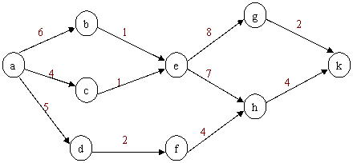

上海海洋大学2014年计算机
专业复试试卷
姓名：
学号：
专业班名：
数据结构部分
一．单项选择题（本大题共10小题，每小题2分，共20分）
1．一个顺序存储的线性表的第一个元素的存储地址是100，每个元素的长度为4，则第4个元素的存储地址是（ ）。
A. 108 B. 112 C. 116 D. 120
2．从一个具有n个结点的单链表中查找其值等于x的结点，在查找成功的情况下，平均需要比较（ ）个结点。
A. n
B. n/2
C. (n+1)/2 D.
(n-1)/2
3．在任意一棵二叉树的前序序列和后序序列中，各叶子之间的相对次序关系（ ）
A．不一定相同
B．互为逆序
C．都不相同
D．都相同
4．高度为5的二叉树至多有结点数为（ ）
A. 63
B. 32
C. 24
D.64
5．若用邻接矩阵表示一个有向图，则其中每一列包含的″1″的个数为（ ）
A．图中每个顶点的出度 B．图中每个顶点的入度
C．图中弧的条数
D．图中连通分量的数目
6．图的邻接矩阵表示法适用于表示（ ）
A．无向图
B．有向图
C．稠密图 D．稀疏图
7．在一个单链表中，若p所指的结点不是最后一个结点，在p之后插入s所指的结点，则执行（ ）。
A. s->next=p;
p->next=s
B. p-next=s; s->next=p
C. p=s;
s->next=p->next D. s->next=p->next;
p->next=s
8．下列排序算法中，其时间复杂度和记录的初始排列无关的是（ ）
A．直接选择排序 B．插入排序
C．快速排序 D．冒泡排序
9．若有序表的关键字序列为（b,c,d,e,f,g,q,r,s,t），则在二分查找关键字b的过程中，先后进行比较的关键字依次为（ ）
A．f,d,b B．f,c,b
C．g,c,b D．g,d,b
10．如下图所示的4棵二叉树中，（ ）不是完全二叉树。

二．填空题（本大题共10小题，每小题2分，共20分）
1． 在数据结构中，数据的逻辑结构分线性结构和
。
2． 称算法的时间复杂度为O(f(n))，其含义是指算法的执行时间和___ ____的数量级相同。
3． 在一个长度为n的单链表L中，删除链表中*p的前驱结点的时间复杂度为_____ ____。
4． 假设为循环队列分配的向量空间为Q[20]，若队列的长度和队头指针值分别为13和17，则当前尾指针的值为________。
5． 对于栈只能在_________插入和删除元素。
6． 通常从正确性、________、可读性、效率和健壮性等5个方面评价算法（包括程序）的质量。
7． 在具有n个单元的循环队列中，队满时共有 个元素。
8． 若对关键字序列（43，02，80，48，26，57，15，73，21，24，66）进行一趟增量为3的希尔排序，则得到的结果为 。
9．
在索引存储中，若一个索引项对应数据对象表中的一个表项（记录），则称此索引为
索引，若对应数据对象表中的若干个表项，则称此索引为 索引。
10．
二叉树中度为0的结点数为30，度为1的结点数为30，总结点数为 。
三．问答题（本大题共1小题，每小题10分，共10分）
1．在如图所示的AOE网中，试回答如下问题：（1）计算出每个顶点所表示的事件的最早发生时间和最迟发生时间；（2）计算出每条边所表示的活动的最早开始时间和最迟开始时间；（3）找出此网络中的关键活动和关键路径。

数据库部分：
一．（10分）设有关系R和S：
R A B C S B C D
6 4 2 4 4 9
6 5 3 4 2 5
5 6 8 5 2 6
5 3 8
6 8 4
1＞3 3=2 2=1
试计算：R´S，R⋈S，R⋈S，R⋈S，R⋈S。
二．单选题（本大题共20小题，每小题1分，共10分，请将答案写在每道题后的括号内。）
1、在DB技术中，“脏数据”是指（ ）
A．未回退的数据
B． 未提交的数据
C．回退的数据
D． 未提交随后又被撤消的数据
2、下列哪一项不是日志文件所具有的功能？（ ）
A．帮助客户进行计算和统计
B．记载用户针对数据库进行的操作
C．维护数据完整性
D．帮助用户恢复数据库
3、无损分解和保持FD之间的关系是（
）
A．同时成立或不成立 B．前者蕴涵后者
C．后者蕴涵前者
D．没有必然的联系
4、下列哪个关键字在Select语句中表示所有列？（ ）
A．*
B．ALL
C．DESC
D．DISTINCT
5、下列函数可以计算平均值的是？（ ）
A．sum
B．avg
C．count
D．sum
6、下列函数可以计算某一列上最大值的是？（ ）
A．sum
B．min
C．avg
D．max
7、下列特点哪一项是视图所不具备的？（ ）
A． 分割数据，屏蔽拥护所不需要浏览的数据
B． 提高应用程序和表之间的独立性，充当程序和表之间的数据
C． 降低对最终用户查询水平的要求
D． 提高数据的网络传输速度
8、下列哪个约束不可以为空？（ ）
A．主键
B．外键
C．默认值 D．UNIQUE约束
9、在ER模型转换成关系模型的过程中，下列叙述不正确的是（ ）
A．每个实体类型转换成一个关系模式
B．每个联系类型转换成一个关系模式
C．每个M：N联系类型转换成一个关系模式
D．在处理1：1 和1：N联系类型时，不生成新的关系模式
10、事务是一个（
）
A．程序
B．进程
C．操作序列 D．完整性规则
三．（20分）高校项目管理数据库中的关系如下：
Teacher (tnu，tname，sex，age，degree，depart)
Project (pnu，pname，type，fee，starttime，endtime，conclusion)
Implicate (tnu, pnu，role，period)
其中：
Teacher表示教师，可简单地用T表示，tnu，tname，sex，age，degree，depart分别表示教师编号、姓名、性别、年龄、学历和所属部门；
Project表示项目，可简单地用P表示, pnu，pname，type，fee，starttime，endtime，conclusion分别表示项目编号、名称、类型、费用、开始时间、结束时间和结题结论；
Implicate表示参与，可简单地用I表示，role，period分别表示教师在项目中承担的角色和参与的时间（月数）。
1． （8分）用关系代数表达下列查询
（1） 参与过20万元及以上项目的教师姓名和所属部门；
（2） 至少参与过两个项目的教师姓名和年龄。
2． （12分）用SQL语句实现下列要求
（1） 查询编号为“P05”的项目的结题情况；
（2） 列出所有的项目类型为纵向（不是横向）的项目；
（3）
参与过类型为”
（4） 统计每个教师参与纵向项目的次数；